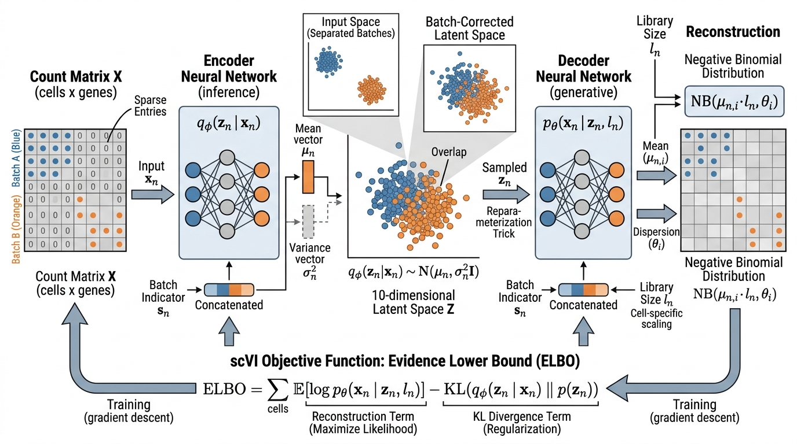

Single-cell RNA sequencing (scRNA-seq) measures gene expression in individual cells, revealing the heterogeneity hidden by bulk measurements. A single tumor biopsy might contain dozens of distinct cell populations, each with different gene expression programs, drug sensitivities, and clinical implications. The challenge: scRNA-seq datasets contain millions of cells, thousands of genes per cell, severe technical noise (dropout, batch effects), and no ground-truth cell labels. Deep generative models, especially variational autoencoders, have become the standard computational framework for analyzing this data. This section covers the progression from task-specific models (scVI, scANVI) to foundation models (scGPT, Geneformer) that learn transferable representations of cellular biology.
1. The Single-Cell Data Landscape
Two tumor cells sitting a millimeter apart in the same biopsy can run entirely different gene programs, respond to opposite drugs, and seal opposite fates for the patient, yet a bulk sequencing experiment would average their signals into a single misleading number. Single-cell RNA-seq resolves this by producing a count matrix \(\mathbf{X} \in \mathbb{N}^{N \times G}\), where \(N\) is the number of cells (thousands to millions) and \(G\) is the number of genes (typically 20,000 to 30,000), with entry \(x_{ng}\) recording the mRNA transcripts detected for gene \(g\) in cell \(n\). This matrix has three defining properties:
The count matrix is the foundational data structure of single-cell genomics. Each row represents one cell, each column one gene, and each entry records how many messenger RNA molecules of that gene were captured from that cell. Unlike bulk RNA-seq, which averages gene expression across millions of cells and masks cell-to-cell differences, the count matrix preserves individual cell identity. Researchers use it to discover rare cell types, trace developmental trajectories, and identify cells that respond differently to a drug. The production mechanism is direct: droplet microfluidics or well plates isolate individual cells, reverse transcription converts their mRNA to cDNA, amplification and sequencing generate reads, and molecular barcodes link each read back to its cell of origin. Use scRNA-seq count matrices when biological heterogeneity within a sample is the question; use bulk RNA-seq when you need to compare average expression between conditions in a homogeneous sample.
- Sparsity: 80 to 95% of entries are zero, partly because of biological absence (the gene is not expressed) and partly because of technical dropout (the transcript was present but not captured).
- Overdispersion: the variance of gene counts exceeds the mean, making Poisson models inadequate. The negative binomial distribution (a probability distribution for count data that adds an extra dispersion parameter to the Poisson, allowing the variance to exceed the mean) is the standard choice.
- Batch effects: systematic differences between experiments (different labs, sequencing platforms, sample preparation protocols) can be larger than biological differences between cell types.
Common Misconception
A common misconception is that a zero in the count matrix means the gene is biologically inactive in that cell. In reality, the majority of zeros are technical dropouts: the gene was expressed, but its mRNA molecules were lost during cell lysis, reverse transcription, or amplification. Treating all zeros as true biological absence leads to spurious conclusions about gene co-expression and cell-type identity. This is precisely why models like scVI use a zero-inflated or dropout-aware likelihood rather than taking the observed counts at face value.
The standard data structure in the Python single-cell ecosystem is the
AnnData object, which wraps the count matrix with cell-level
metadata (observations) and gene-level metadata (variables).
In short: single-cell genomics trades one averaged answer for millions of noisy individual ones, and the entire field rests on statistical models that can tell biological signal from technical artifact.
import scanpy as sc
import anndata as ad
import numpy as np
def load_and_preprocess(h5ad_path: str) -> ad.AnnData:
"""Load and preprocess a single-cell dataset.
Standard preprocessing pipeline:
1. Filter low-quality cells and rarely-detected genes
2. Normalize library sizes
3. Log-transform
4. Select highly variable genes
5. Scale to unit variance
The raw counts are preserved in adata.raw for downstream
models (scVI) that need untransformed data.
"""
adata = sc.read_h5ad(h5ad_path)
print(f"Loaded: {adata.n_obs} cells, {adata.n_vars} genes")
# Quality control: filter cells and genes
sc.pp.filter_cells(adata, min_genes=200)
sc.pp.filter_genes(adata, min_cells=3)
# Compute QC metrics
adata.var["mt"] = adata.var_names.str.startswith("MT-")
sc.pp.calculate_qc_metrics(
adata, qc_vars=["mt"], percent_top=None, inplace=True
)
# Filter high-mitochondrial cells (likely dying/damaged)
adata = adata[adata.obs["pct_counts_mt"] < 20].copy()
# Preserve raw counts for scVI (needs untransformed data)
adata.raw = adata.copy()
# Normalize and log-transform for visualization
sc.pp.normalize_total(adata, target_sum=1e4)
sc.pp.log1p(adata)
# Select highly variable genes
sc.pp.highly_variable_genes(
adata, n_top_genes=2000, flavor="seurat_v3",
layer="counts" if "counts" in adata.layers else None,
)
print(f"After filtering: {adata.n_obs} cells, "
f"{sum(adata.var['highly_variable'])} HVGs")
return adataThe central challenge in single-cell analysis is disentangling biological signal from technical noise. Two cells from the same tissue processed in different labs can look more different than two cells from different tissues processed together. Batch correction is not a preprocessing step that can be separated from the analysis; it must be integrated into the statistical model. This is why generative models (scVI) tend to outperform ad hoc correction methods in published benchmarks: they model the data-generating process, including the batch-specific components, jointly.
2. scVI: Variational Inference for Single-Cell Data
Without reliable batch correction, a researcher merging tumor biopsies from two hospitals would conclude that the most important difference between cancer cells is which sequencing machine processed them, not which mutations drive the tumor. scVI was designed to solve exactly this problem.
scVI (single-cell Variational Inference) is a deep generative model that learns a low-dimensional latent representation of cells while accounting for library size variation (where library size is the total number of transcripts captured from a cell, which reflects sequencing depth rather than biological differences) and batch effects. The generative model assumes each cell \(n\) in batch \(s_n\) has a latent representation \(\mathbf{z}_n \in \mathbb{R}^d\) (typically \(d = 10\)) and a library size factor \(\ell_n\):
$$\mathbf{z}_n \sim \mathcal{N}(\mathbf{0}, \mathbf{I})$$ $$\ell_n \sim \text{LogNormal}(\ell_\mu, \ell_\sigma^2)$$The expression of gene \(g\) in cell \(n\) follows a negative binomial distribution parameterized by a neural network decoder:
$$x_{ng} \sim \text{NB}\bigl(\mu_{ng},\; \theta_g\bigr)$$Training Objective
where \(\mu_{ng} = \ell_n \cdot f_\theta(\mathbf{z}_n, s_n)_g\) is the expected expression (a function of the latent code and batch identity), and \(\theta_g\) is a gene-specific dispersion parameter. The negative binomial accommodates the overdispersion in count data that a Poisson model cannot capture. The model is trained by maximizing the Evidence Lower Bound (ELBO), connecting to the variational inference framework from Chapter 32:
$$\text{ELBO} = \mathbb{E}_{q(\mathbf{z}_n | \mathbf{x}_n)}\bigl[\log p(\mathbf{x}_n | \mathbf{z}_n, s_n, \ell_n)\bigr] - \text{KL}\bigl(q(\mathbf{z}_n | \mathbf{x}_n) \| p(\mathbf{z}_n)\bigr)$$
Figure 48.3 illustrates the scVI architecture. The encoder compresses each cell's gene expression vector and batch label into a low-dimensional latent code, while the decoder reconstructs the expected counts conditioned on both the latent code and the batch identity. This encoder-decoder structure ensures that the latent space captures biology, not batch artifacts. Figure 48.3.1 illustrates scVI variational autoencoder architecture for single-cell batch correction.
Mental Model
Think of scVI's latent space like a seating chart at a wedding with guests from two families (batches). Each guest (cell) has a personality profile (gene expression), but their behavior is also shaped by which family's table they sit at (batch effects): the loud family talks more, the quiet family less. scVI learns to separate personality from table assignment. The encoder strips away the table effect to find each guest's true personality (latent code), and the decoder can reconstruct how any guest would behave at any table. The ELBO training objective ensures the personality descriptions are compact (the KL term, like a word limit on the seating card) while still faithfully predicting behavior (the reconstruction term, like checking the card against actual conversations). The result is a personality map where similar people sit near each other regardless of which family they arrived with.
import scvi
import anndata as ad
def train_scvi(
adata: ad.AnnData,
batch_key: str = "batch",
n_latent: int = 10,
n_layers: int = 2,
n_hidden: int = 128,
max_epochs: int = 200,
) -> scvi.model.SCVI:
"""Train scVI for batch-corrected latent representation.
The model learns a low-dimensional embedding that captures
biological variation while removing batch-specific effects.
Args:
adata: AnnData with raw counts in adata.X or adata.layers["counts"]
batch_key: column in adata.obs identifying batches
n_latent: dimensionality of the latent space
n_layers: number of hidden layers in encoder/decoder
n_hidden: hidden layer width
Returns: trained scVI model
"""
# Register the AnnData object with scVI
scvi.model.SCVI.setup_anndata(
adata,
layer="counts" if "counts" in adata.layers else None,
batch_key=batch_key,
)
# Create and train the model
model = scvi.model.SCVI(
adata,
n_latent=n_latent,
n_layers=n_layers,
n_hidden=n_hidden,
gene_likelihood="nb", # Negative binomial
)
model.train(
max_epochs=max_epochs,
early_stopping=True,
early_stopping_patience=10,
)
return model
def get_latent_representation(model: scvi.model.SCVI, adata: ad.AnnData):
"""Extract batch-corrected latent representation.
The latent space captures biological variation with batch
effects removed. Use for clustering, visualization, and
differential expression.
"""
# Get latent representation (batch-corrected)
latent = model.get_latent_representation()
adata.obsm["X_scVI"] = latent
# Compute neighbors and UMAP in the scVI latent space
import scanpy as sc
sc.pp.neighbors(adata, use_rep="X_scVI")
sc.tl.umap(adata)
sc.tl.leiden(adata, resolution=0.8) # Leiden: a graph-based community detection algorithm that partitions cells into clusters
return adata
def differential_expression(
model: scvi.model.SCVI,
adata: ad.AnnData,
group1: str,
group2: str,
groupby: str = "leiden",
) -> "pd.DataFrame":
"""Bayesian differential expression between cell groups.
scVI's DE test uses the generative model to compute
posterior log-fold changes and Bayes factors (the ratio of
evidence for differential expression versus no change),
avoiding the distributional assumptions of t-tests or
Wilcoxon tests.
"""
de_results = model.differential_expression(
adata,
groupby=groupby,
group1=group1,
group2=group2,
)
# Filter significant genes
significant = de_results[
(de_results["is_de_fdr_0.05"]) &
(abs(de_results["lfc_mean"]) > 0.5)
]
return significant.sort_values("lfc_mean", ascending=False)Exercise 48.3.1
You train an scVI model on a dataset containing 50,000 cells from two batches (Batch A: 30,000 cells, Batch B: 20,000 cells) with a 10-dimensional latent space. After training, you plot the Uniform Manifold Approximation and Projection (UMAP) of the latent representations and observe that cells still cluster primarily by batch rather than by cell type. Name two concrete adjustments to your scVI training configuration that could improve batch mixing, and explain why each one would help.
Hint
Consider the relationship between the KL divergence term weight and how strongly the model is pushed toward the shared prior distribution across batches. Also think about whether 10 latent dimensions might be too many or too few for the model to separate batch variation from biological variation. Increasing max_epochs or adjusting the KL annealing schedule (which gradually increases the KL weight from 0 to 1 during training) are both valid directions.
Step-Through: scVI ELBO Computation for One Cell
Trace through the scVI ELBO for a single cell with 3 genes to see how the loss balances reconstruction against regularization.
Setup. Cell \(n\) has observed counts \(\mathbf{x} = [5, 0, 12]\) across genes A, B, C. It belongs to Batch 1. The encoder outputs \(\mu_z = [0.3, -0.1]\) and \(\sigma_z = [0.8, 0.9]\) (a 2D latent space for simplicity). We sample \(\mathbf{z} = [0.3, -0.1]\) (using the mean for this trace). Library size factor \(\ell = 17\) (total count).
Step 1: Decoder. The decoder neural network takes \(\mathbf{z} = [0.3, -0.1]\) and the batch indicator \(s = 1\), and outputs gene frequency parameters: \(\rho = [0.28, 0.02, 0.70]\). Multiplying by \(\ell\): expected counts \(\mu = [4.76, 0.34, 11.90]\). Gene-specific dispersions: \(\theta = [3.0, 2.5, 4.0]\).
Step 2: Reconstruction term. Evaluate the negative binomial log-likelihood for each gene. For gene A: \(\log \text{NB}(5 \mid \mu{=}4.76, \theta{=}3.0) = -2.14\). For gene B: \(\log \text{NB}(0 \mid \mu{=}0.34, \theta{=}2.5) = -0.13\). For gene C: \(\log \text{NB}(12 \mid \mu{=}11.90, \theta{=}4.0) = -2.58\). Summing: reconstruction \(= -4.85\).
Step 3: KL divergence. \(\text{KL}(q \| p) = \frac{1}{2}\sum_{j=1}^{2}(\sigma_j^2 + \mu_j^2 - 1 - \log \sigma_j^2)\). Dimension 1: \(\frac{1}{2}(0.64 + 0.09 - 1 - \log 0.64) = \frac{1}{2}(0.64 + 0.09 - 1 + 0.446) = 0.088\). Dimension 2: \(\frac{1}{2}(0.81 + 0.01 - 1 - \log 0.81) = \frac{1}{2}(0.81 + 0.01 - 1 + 0.211) = 0.016\). Total KL \(= 0.104\).
Step 4: ELBO. \(\text{ELBO} = -4.85 - 0.104 = -4.954\). The loss to minimize is \(-\text{ELBO} = 4.954\). Note that the reconstruction term (\(4.85\)) dominates: the model is mostly learning to predict counts accurately, with the KL (\(0.104\)) gently regularizing the latent space toward a standard normal.
Once scVI produces a batch-corrected latent space, the natural next question is whether those embeddings can also assign biological identities to cells, particularly when only a fraction of cells carry expert-curated labels.
3. scANVI: Semi-Supervised Cell Annotation
scANVI extends scVI with a semi-supervised classification layer. Given a dataset where some cells have known type labels and others do not, scANVI simultaneously learns the latent representation and transfers labels to unlabeled cells. The generative model adds a discrete cell-type variable \(c_n\):
$$p(\mathbf{x}_n | \mathbf{z}_n, c_n, s_n, \ell_n) = \text{NB}\bigl(\ell_n \cdot f_\theta(\mathbf{z}_n, c_n, s_n),\; \theta\bigr)$$For labeled cells, \(c_n\) is observed; for unlabeled cells, it is treated as a latent variable and marginalized (summed over all possible cell-type values so the model considers every assignment weighted by its probability). The classifier \(q_\phi(c_n | \mathbf{z}_n)\) learns to predict cell types from the latent representation, enabling label transfer across datasets, batches, and even species.
def train_scanvi(
adata: ad.AnnData,
labels_key: str = "cell_type",
unlabeled_category: str = "Unknown",
batch_key: str = "batch",
n_latent: int = 10,
) -> scvi.model.SCANVI:
"""Train scANVI for semi-supervised cell type annotation.
Uses labeled cells to learn a classifier that transfers
annotations to unlabeled cells, even across batches.
"""
# First train scVI as initialization
scvi.model.SCVI.setup_anndata(
adata, batch_key=batch_key,
layer="counts" if "counts" in adata.layers else None,
)
scvi_model = scvi.model.SCVI(adata, n_latent=n_latent)
scvi_model.train(max_epochs=100, early_stopping=True)
# Initialize scANVI from pretrained scVI
scanvi_model = scvi.model.SCANVI.from_scvi_model(
scvi_model,
adata=adata,
labels_key=labels_key,
unlabeled_category=unlabeled_category,
)
scanvi_model.train(max_epochs=50, early_stopping=True)
# Predict labels for unlabeled cells
predictions = scanvi_model.predict()
adata.obs["predicted_cell_type"] = predictions
return scanvi_modelThe Human Cell Atlas (HCA) project aims to create a comprehensive reference map of all human cell types. As of 2025, it has profiled over 60 million cells across 30 organs. scVI and scANVI are core tools in the project's computational pipeline: scVI integrates data from hundreds of labs with different protocols, and scANVI transfers cell-type annotations from well-characterized reference datasets to new samples. A query dataset of 100,000 cells from a patient biopsy can be mapped onto the atlas in minutes, automatically identifying every cell type present and flagging cells with unusual expression profiles as potential disease-associated states.
4. scGPT: A Foundation Model for Single-Cell Biology
scGPT applies the transformer pretraining paradigm to single-cell transcriptomics. The model treats each cell's gene expression profile as a "sentence" where genes are "tokens" and expression levels are "values." Pretraining uses a masked gene expression prediction objective: given a subset of a cell's gene expression values, predict the masked genes.
The input representation has three components per gene:
- Gene token embedding: a learned vector for each gene identity.
- Expression value embedding: the log-normalized expression value, binned into discrete levels and embedded.
- Condition embedding: optional metadata (batch, perturbation, cell type) encoded as additional tokens.
The model is pretrained on 33 million cells from the CELLxGENE database (circa 2023), learning representations that transfer to downstream tasks. (After pretraining on those 33 million unlabeled cells, scGPT reaches 85 to 95% annotation accuracy on published benchmarks with only a few hundred labeled examples per cell type, a ratio of roughly 100,000 unlabeled cells per labeled one.) (as of 2025, newer single-cell foundation models such as scGPT-2 and scFoundation have scaled pretraining to over 50 million cells with improved architectures, though the original scGPT remains widely used as a baseline):
import scgpt
from scgpt.model import TransformerModel
from scgpt.tokenizer import GeneVocab
from scgpt.utils import set_seed
import torch
def finetune_scgpt_for_annotation(
adata_train: "ad.AnnData",
adata_test: "ad.AnnData",
pretrained_model_dir: str,
cell_type_key: str = "cell_type",
max_epochs: int = 30,
batch_size: int = 64,
learning_rate: float = 1e-4,
) -> dict:
"""Fine-tune scGPT for cell type annotation.
Uses a pretrained scGPT model and fine-tunes the
classification head on a labeled training set.
The pretrained model captures general cellular biology;
fine-tuning adapts it to a specific tissue or disease context.
"""
set_seed(42)
# Load pretrained model and vocabulary
vocab = GeneVocab.from_file(f"{pretrained_model_dir}/vocab.json")
model_config = scgpt.load_config(f"{pretrained_model_dir}/config.json")
model = TransformerModel(
ntoken=len(vocab),
d_model=model_config["embsize"],
nhead=model_config["nheads"],
d_hid=model_config["d_hid"],
nlayers=model_config["nlayers"],
nlayers_cls=3, # Classification head layers
n_cls=len(adata_train.obs[cell_type_key].unique()),
vocab=vocab,
)
# Load pretrained weights
model.load_pretrained(f"{pretrained_model_dir}/best_model.pt")
model = model.cuda()
# Prepare data loaders
from scgpt.data import prepare_dataloader
train_loader = prepare_dataloader(
adata_train, vocab, batch_size=batch_size,
cell_type_key=cell_type_key, shuffle=True,
)
test_loader = prepare_dataloader(
adata_test, vocab, batch_size=batch_size,
cell_type_key=cell_type_key, shuffle=False,
)
# Fine-tune with classification loss
optimizer = torch.optim.AdamW(model.parameters(), lr=learning_rate)
criterion = torch.nn.CrossEntropyLoss()
best_accuracy = 0.0
for epoch in range(max_epochs):
model.train()
total_loss = 0.0
for batch in train_loader:
optimizer.zero_grad()
output = model(batch["gene_ids"].cuda(), batch["values"].cuda())
loss = criterion(output["cls_output"], batch["labels"].cuda())
loss.backward()
optimizer.step()
total_loss += loss.item()
# Evaluate
model.eval()
correct, total = 0, 0
with torch.no_grad():
for batch in test_loader:
output = model(batch["gene_ids"].cuda(), batch["values"].cuda())
preds = output["cls_output"].argmax(dim=1)
correct += (preds == batch["labels"].cuda()).sum().item()
total += len(preds)
accuracy = correct / total
best_accuracy = max(best_accuracy, accuracy)
return {"best_accuracy": best_accuracy, "model": model}5. Geneformer: Transfer Learning for Network Biology
Geneformer approaches single-cell foundation modeling differently: it rank-orders genes within each cell by expression level and processes the ranked list as a token sequence. This representation is inherently normalized, immune to library size variation, and encodes each gene's relative importance in the cell's regulatory program.
The model uses a standard transformer encoder pretrained with masked token prediction on approximately 30 million single-cell transcriptomes from the Genecorpus-30M dataset (Theodoris et al., Nature, 2023). The key applications are:
- Gene dosage sensitivity prediction: which genes, when their expression is halved (haploinsufficiency, the condition where a single functional copy of a gene is insufficient to maintain normal function), cause disease? Geneformer predicts this by measuring how much the model's attention patterns change when a gene is removed.
- In silico perturbation: predict the effect of knocking out or overexpressing a gene by modifying the input token sequence and observing changes in the model's output embedding.
- Chromatin dynamics: predict how gene regulatory states change during cell differentiation.
As of 2025, Geneformer 2 has expanded pretraining to over 95 million single-cell transcriptomes and added multi-task fine-tuning heads, improving performance on dosage sensitivity and perturbation response benchmarks compared to the original release. The rank-order tokenization strategy described here remains unchanged in the newer version.
from geneformer import InSilicoPerturber, EmbExtractor
from geneformer import TranscriptomeTokenizer
def run_in_silico_perturbation(
model_dir: str,
tokenized_dataset_path: str,
genes_to_perturb: list[str],
cell_type_col: str = "cell_type",
) -> dict:
"""Predict the effect of gene perturbations using Geneformer.
Simulates gene knockouts by removing genes from the ranked
expression list and measuring the shift in cell embeddings.
A large embedding shift indicates the gene is important for
maintaining the cell's identity/state.
"""
# Extract baseline embeddings
extractor = EmbExtractor(
model_type="Pretrained",
num_classes=0,
emb_mode="cell",
filter_data={cell_type_col: ["T cell", "B cell", "Monocyte"]},
max_ncells=10000,
emb_layer=-1,
)
baseline_embs = extractor.extract_embs(
model_dir, tokenized_dataset_path, output_dir="./embeddings"
)
# Run in silico perturbation
perturber = InSilicoPerturber(
perturb_type="delete", # Simulate knockout
perturb_rank_shift=None,
genes_to_perturb=genes_to_perturb,
model_type="Pretrained",
num_classes=0,
emb_mode="cell",
cell_states_to_model={
cell_type_col: {
"start": "T cell",
"goal": "B cell",
"alt": "Monocyte",
}
},
)
perturber.perturb_data(
model_dir, tokenized_dataset_path, output_dir="./perturbations"
)
return {"status": "complete", "output_dir": "./perturbations"}For standard single-cell workflows (clustering, marker gene detection, trajectory analysis) without deep learning, Scanpy provides a complete pipeline in approximately 10 lines:
import scanpy as sc
adata = sc.read_h5ad("pbmc_10k.h5ad")
sc.pp.normalize_total(adata)
sc.pp.log1p(adata)
sc.pp.highly_variable_genes(adata, n_top_genes=2000)
sc.pp.pca(adata)
sc.pp.neighbors(adata)
sc.tl.umap(adata)
sc.tl.leiden(adata, resolution=0.5)
sc.tl.rank_genes_groups(adata, "leiden", method="wilcoxon")
sc.pl.rank_genes_groups(adata, n_genes=10, save="markers.pdf")
This covers preprocessing, dimensionality reduction, clustering, and marker gene identification in 10 lines instead of the hundreds required to implement Principal Component Analysis (PCA), k-nearest-neighbors graph construction, UMAP, Leiden clustering (a community detection algorithm that partitions the cell neighborhood graph into groups of densely connected cells), and Wilcoxon rank-sum tests from scratch. Use Scanpy for exploration; reach for scVI/scGPT when batch integration or perturbation modeling is needed.
Foundation models like scGPT and Geneformer learn rich representations of cellular state, but their most consequential use goes beyond classification: predicting what happens to a cell when you intervene on its genome.
6. Perturbation Prediction and Gene Regulatory Networks
Among the most consequential applications of single-cell foundation models is predicting the outcome of genetic perturbations before performing them. Perturb-seq experiments combine Clustered Regularly Interspaced Short Palindromic Repeats (CRISPR) gene knockouts with single-cell sequencing, measuring how each knockout changes the expression of all other genes. This produces a perturbation response matrix (a genes-by-knockouts table where each column records the expression changes caused by removing one gene) that captures causal regulatory relationships.
Foundation models trained on large Perturb-seq datasets can predict perturbation responses for unseen gene knockouts. The prediction problem: given a cell in state \(\mathbf{x}\) and a perturbation to gene \(g\), predict the post-perturbation expression state \(\mathbf{x}'\). This connects directly to the causal inference framework from Chapter 31. Each perturbation acts as an intervention, and the cell's response reveals causal structure in the gene regulatory network.
Checkpoint
So far: Perturb-seq uses CRISPR knockouts paired with single-cell sequencing to build a perturbation response matrix; foundation models trained on this data predict how unseen knockouts will shift a cell's expression state; and each knockout acts as a causal intervention that exposes regulatory wiring in the gene network.
import numpy as np
from scipy.stats import pearsonr
def evaluate_perturbation_prediction(
predicted: np.ndarray,
observed: np.ndarray,
control: np.ndarray,
top_k: int = 50,
) -> dict:
"""Evaluate perturbation prediction quality.
Metrics:
- Pearson correlation on differentially expressed genes
- Mean squared error on top-k affected genes
- Direction accuracy (fraction of genes with correctly
predicted up/down regulation)
Args:
predicted: predicted post-perturbation expression (n_genes,)
observed: actual post-perturbation expression (n_genes,)
control: unperturbed control expression (n_genes,)
"""
# Compute fold changes
pred_fc = predicted - control
obs_fc = observed - control
# Identify top-k most affected genes (by observed fold change)
top_indices = np.argsort(np.abs(obs_fc))[-top_k:]
# Pearson correlation on top-k genes
r, p_value = pearsonr(pred_fc[top_indices], obs_fc[top_indices])
# Mean squared error on top-k
mse = np.mean((pred_fc[top_indices] - obs_fc[top_indices]) ** 2)
# Direction accuracy
pred_direction = np.sign(pred_fc[top_indices])
obs_direction = np.sign(obs_fc[top_indices])
direction_acc = np.mean(pred_direction == obs_direction)
return {
"pearson_r": float(r),
"pearson_p": float(p_value),
"mse_top_k": float(mse),
"direction_accuracy": float(direction_acc),
}Beyond predicting individual perturbation outcomes, these models also enable inference of gene regulatory networks (GRNs): directed graphs where an edge from gene A to gene B means that changing A's expression causes a downstream change in B. By systematically predicting knockouts for every gene in a cell type and recording which other genes shift in response, researchers can reconstruct a full regulatory wiring diagram without performing every experiment in the lab. The resulting GRN complements the causal discovery methods from Chapter 31, grounding abstract causal graphs in measurable molecular mechanisms.
Real-World Application: Cancer Immunotherapy Response Prediction
The Tumor Immune Dysfunction and Exclusion (TIDE) framework at Dana-Farber Cancer Institute uses computational gene expression signatures from tumor biopsies to predict which melanoma patients will respond to checkpoint immunotherapy. By combining TIDE's bulk expression scoring with single-cell analyses (using scVI to integrate tumor biopsies from multiple patients and characterize T cell states), clinicians can identify patients whose T cells are in an "exhaustion-resistant" transcriptional state before treatment begins. In published validation cohorts, TIDE achieved approximately 75% accuracy (circa 2023) in distinguishing responders from non-responders. This guides treatment selection and avoids exposing likely non-responders to severe autoimmune side effects.
Research Frontier
In 2024, the Universal Cell Embeddings (UCE) framework (Rosen et al., "Universal Cell Embeddings: A Foundation Model for Cell Biology," Nature Methods, 2024) demonstrated that a single pre-trained model can embed cells from any organism and any sequencing technology into a shared latent space without requiring gene-name alignment or species-specific fine-tuning. UCE uses protein-sequence-derived gene representations (rather than arbitrary gene IDs) as input tokens, enabling zero-shot transfer across species. On cross-species benchmarks, On the benchmarks tested, UCE matched or exceeded task-specific models at cell type classification, batch integration, and perturbation response prediction, all without seeing the target species during training. This points toward a truly universal cell atlas where human, mouse, zebrafish, and plant cells inhabit one coordinate system, a capability none of the models covered earlier in this section yet achieve.
The Cell That Launched a Thousand Clusters
When the first large-scale single-cell atlas of the mouse brain was published in 2018, researchers identified over 500 distinct cell types. But a follow-up study revealed that roughly 15% of those "types" were actually doublets: two cells accidentally captured in the same droplet, whose merged transcriptomes created phantom hybrid identities (for example, a neuron fused with an astrocyte produced what looked like a novel "neuro-glial" type). The doublet problem is so pervasive that modern pipelines now run dedicated doublet detection tools (Scrublet, DoubletFinder) before any clustering. The lesson: in single-cell genomics, discovering a new cell type is easy; proving it actually exists is the hard part.
scGPT and Geneformer are domain-specific instantiations of the foundation model paradigm from Chapter 27. The pretraining strategy (masked prediction on unlabeled data) is identical to BERT for text and MAE for images. The domain-specific contributions are the tokenization (gene identities and expression values as tokens), the architectural adaptations (handling variable-length gene lists, incorporating metadata), and the downstream tasks (cell annotation, perturbation prediction). The representation learning perspective from Chapter 26 frames these models as learning a cell embedding space where biological similarity is captured by geometric proximity.
7. Discovery Workbench Integration
The Discovery Workbench gains a SingleCellAnalyzer component that
wraps scVI for data integration, scANVI for annotation, and the perturbation
prediction pipeline. Users provide AnnData objects from multiple experiments, and
the component produces batch-corrected embeddings, cell-type annotations, and
differential expression results, with all parameters and results logged to the
experiment registry.
from discovery_workbench import Analyzer, ExperimentRegistry
class SingleCellAnalyzer(Analyzer):
"""Single-cell analysis pipeline for the Discovery Workbench."""
def integrate_and_annotate(
self,
datasets: list["ad.AnnData"],
reference_labels: str = "cell_type",
batch_key: str = "dataset",
) -> "ad.AnnData":
"""Integrate multiple datasets with batch correction and annotation.
Pipeline: concatenate -> scVI integration -> scANVI annotation
"""
import anndata as ad
# Concatenate datasets with batch labels
combined = ad.concat(datasets, label=batch_key)
self.registry.log("input", {
"n_datasets": len(datasets),
"total_cells": combined.n_obs,
})
# Train scVI for integration
scvi_model = train_scvi(combined, batch_key=batch_key)
combined = get_latent_representation(scvi_model, combined)
# Train scANVI for annotation transfer
scanvi_model = train_scanvi(
combined, labels_key=reference_labels, batch_key=batch_key
)
self.registry.log("integration", {
"n_clusters": len(combined.obs["leiden"].unique()),
"annotation_accuracy": scanvi_model.history["accuracy"][-1],
})
return combinedTry It: Cluster and Annotate Peripheral Blood Mononuclear Cell (PBMC) Cells with Scanpy
Build a complete single-cell analysis pipeline on your laptop using a publicly available PBMC dataset. No GPU required.
Step 1. Install dependencies: pip install scanpy leidenalg. Then download the 3k PBMC dataset from 10x Genomics: import scanpy as sc; adata = sc.datasets.pbmc3k(). This loads a 2,700-cell dataset with raw counts for approximately 13,000 genes.
Step 2. Preprocess the data: filter cells with fewer than 200 detected genes, filter genes detected in fewer than 3 cells, normalize each cell to 10,000 total counts, log-transform, and select the top 2,000 highly variable genes with sc.pp.highly_variable_genes(adata, n_top_genes=2000).
Step 3. Reduce dimensions and cluster: run PCA (sc.pp.pca(adata)), build a k-nearest-neighbor graph (sc.pp.neighbors(adata)), compute UMAP (sc.tl.umap(adata)), and cluster with Leiden (sc.tl.leiden(adata, resolution=0.5)). Plot the UMAP with sc.pl.umap(adata, color="leiden") and verify you see 7 to 10 distinct clusters.
Step 4. Identify marker genes for each cluster: run sc.tl.rank_genes_groups(adata, "leiden", method="wilcoxon") and inspect the top 5 markers per cluster with sc.pl.rank_genes_groups(adata, n_genes=5). Look for known markers: CD3D/CD3E for T cells, CD79A/MS4A1 for B cells, LYZ/S100A8 for monocytes, NKG7/GNLY for NK cells.
Step 5. Annotate clusters by assigning cell type labels based on the marker genes you identified. Create a dictionary mapping cluster IDs to cell types (cluster_to_type = {"0": "CD4 T", "1": "Monocyte", ...}), assign with adata.obs["cell_type"] = adata.obs["leiden"].map(cluster_to_type), and plot the final annotated UMAP. Compare your annotations to the published labels in the Scanpy PBMC3k tutorial to check your accuracy.
Lab: Batch Effect Correction Showdown
Goal. Quantify how well scVI removes batch effects compared to naive concatenation, using a real multi-batch PBMC dataset.
Tools. Python with scanpy, scvi-tools, and scib (single-cell integration benchmarking). Install: pip install scanpy scvi-tools scib. Estimated time: 20 to 30 minutes (model training dominates).
Procedure. (1) Load the Scanpy PBMC dataset and simulate two batches by splitting cells randomly and adding a systematic shift to 500 genes in one batch: adata[batch_mask, shifted_genes].X += np.random.normal(2.0, 0.5, shape). (2) Run PCA and UMAP on the raw concatenated data and visualize cells colored by batch; confirm that batch dominates the embedding. (3) Train scVI with batch_key="batch" for 100 epochs, extract the latent representation, and compute UMAP on it. (4) Use scib.metrics.silhouette_batch() and scib.metrics.ari() to compare the two embeddings numerically.
What to vary. Try different values of n_latent (5, 10, 30) and observe how the silhouette batch score and biological conservation (Adjusted Rand Index, or ARI, against true cell types) change. Also try setting gene_likelihood="zinb" (zero-inflated negative binomial) instead of "nb" and compare.
What to observe. In the naive PCA embedding, batch silhouette should be high (cells cluster by batch). After scVI, batch silhouette should drop close to zero (batches are mixed) while ARI against cell types remains high (biological signal is preserved). The trade-off curve across n_latent values reveals how latent dimensionality controls the balance between batch removal and biological resolution.